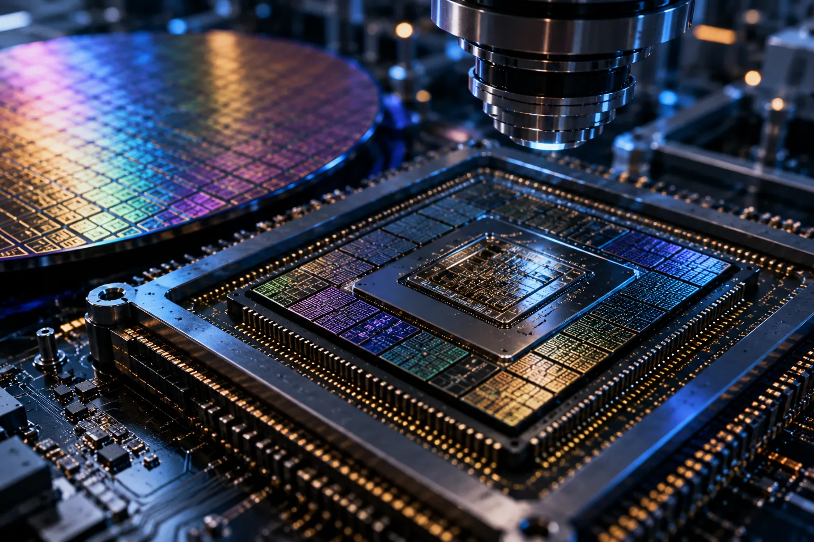
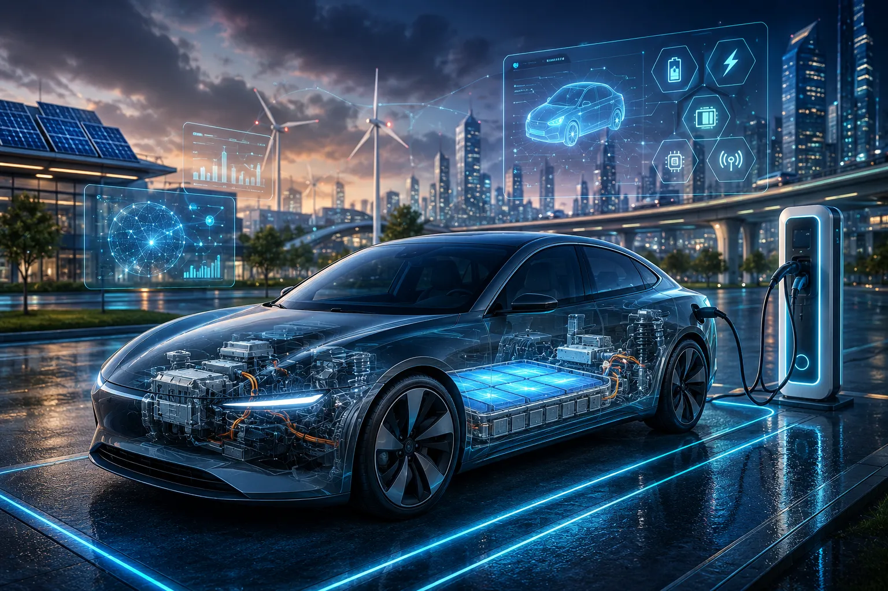

AI
AI Technology
Intelligent systems and responsible design, visualised as an ASARK concept study.
AI-generated conceptual visual from the ASARK collection.View AI guideASARK Collection
Explore visual studies across technology, architecture and design from the ASARK collection.
AI
Intelligent systems and responsible design, visualised as an ASARK concept study.
AI-generated conceptual visual from the ASARK collection.View AI guide
Animation
A visual study of motion, 3D workflows and creative technology.
AI-generated conceptual visual from the ASARK collection.View Animation guide
Space
Satellites, launch systems and exploration beyond Earth.
AI-generated conceptual visual from the ASARK collection.View Space guide
Semiconductor
Advanced chips, integrated circuits and modern semiconductor engineering.
AI-generated conceptual visual from the ASARK collection.View Semiconductor guideMarket Technology
Analytics, financial technology and connected digital-market infrastructure.
AI-generated conceptual visual from the ASARK collection.View Market Technology guide
Vehicles
Electric propulsion, vehicle intelligence and connected mobility systems.
AI-generated conceptual visual from the ASARK collection.View Vehicle Technology guide.webp)
Architecture
Architecture informed by historic forms and shared outdoor space.
AI-generated architectural concept visual. It does not depict a real built project or location.Explore Ancient World.webp)
Architecture
A restrained contemporary residence concept.
AI-generated architectural concept visual. It does not depict a real built project or location.Explore Modern World.webp)
Architecture
A speculative study of future-facing residential form.
AI-generated architectural concept visual. It does not depict a real built project or location.Explore Futuristic World.webp)
Architecture
A technology-oriented interior concept from the Architecture collection.
AI-generated architectural concept visual. It does not depict a real built project or location.Explore Future Workspaces